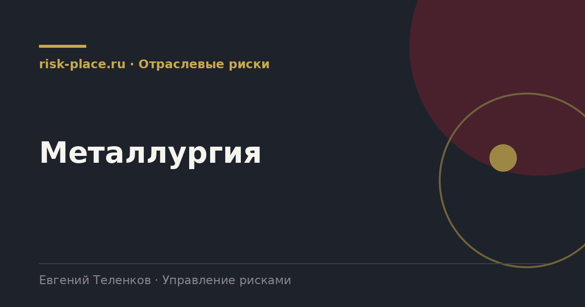

Главная · Библиотека · Отраслевые риски · Металлургия
Библиотека · Отраслевые риски
Отрасль непрерывного цикла, где остановка стоит дороже почти любой аварии, которую она предотвращает.

| Группа | Содержание |
|---|---|
| Промышленная безопасность | Обрушение, затопление выработок, аварии на подъеме, взрывные работы, аварии агрегатов |
| Гидротехнические сооружения | Хвостохранилища, дамбы, накопители. Низкая вероятность и катастрофические последствия |
| Непрерывность производства | Остановка доменного, конвертерного или прокатного передела, потеря футеровки, аварийное расхолаживание |
| Ресурсная база | Подтверждение запасов, содержание полезного компонента, сроки вскрышных работ |
| Экология | Выбросы, обращение с отходами, водопользование, рекультивация, требования к предприятиям-загрязнителям |
| Логистика | Пропускная способность железной дороги, портовые мощности, экспортные маршруты |
| Энергия | Доступность и цена электроэнергии, газа, кокса |
| Рыночные | Цены на металлы, торговые ограничения, спрос ключевых отраслей |
Первое, значимость рисков с крайне низкой вероятностью и катастрофическими последствиями. Гидротехнические сооружения в мировой практике неоднократно давали аварии, последствия которых сопоставимы со стоимостью всей компании. Такие риски принципиально нельзя оценивать по ожидаемым потерям, для них применяются сценарный подход и оценка достаточности барьеров.
Второе, непрерывность цикла. Многие агрегаты нельзя остановить без тяжелых последствий для самого оборудования. Это меняет логику планирования ремонтов и делает управление рисками ремонтных окон отдельной дисциплиной.
Третье, связанность переделов. Отказ на одном переделе распространяется по цепочке, и оценка последствий отдельного события без учета цепочки всегда занижена.
Наиболее уязвимое место в отрасли обычно не производство, а логистика и энергия. Производственные риски отработаны десятилетиями, там есть регламенты, барьеры и опыт. Логистические ограничения при этом часто вообще не попадают в реестр, потому что считаются внешними и неуправляемыми.
Между тем именно они дают наибольшее число реализовавшихся событий с существенным влиянием на выручку. Управляемость здесь не в предотвращении, а в подготовленности, наличии альтернативных маршрутов, договоренностей, складских мощностей и заранее просчитанных решений.
Частые вопросы
Одна форма для любого вопроса
Расскажем о ближайших датах, предложим формат под ваш состав участников и назовем порядок бюджета.
Предпочитаете почту — напишите на info@risk-place.ru. Адрес: Москва, улица Скаковая, 32с2.
 risk-
risk-